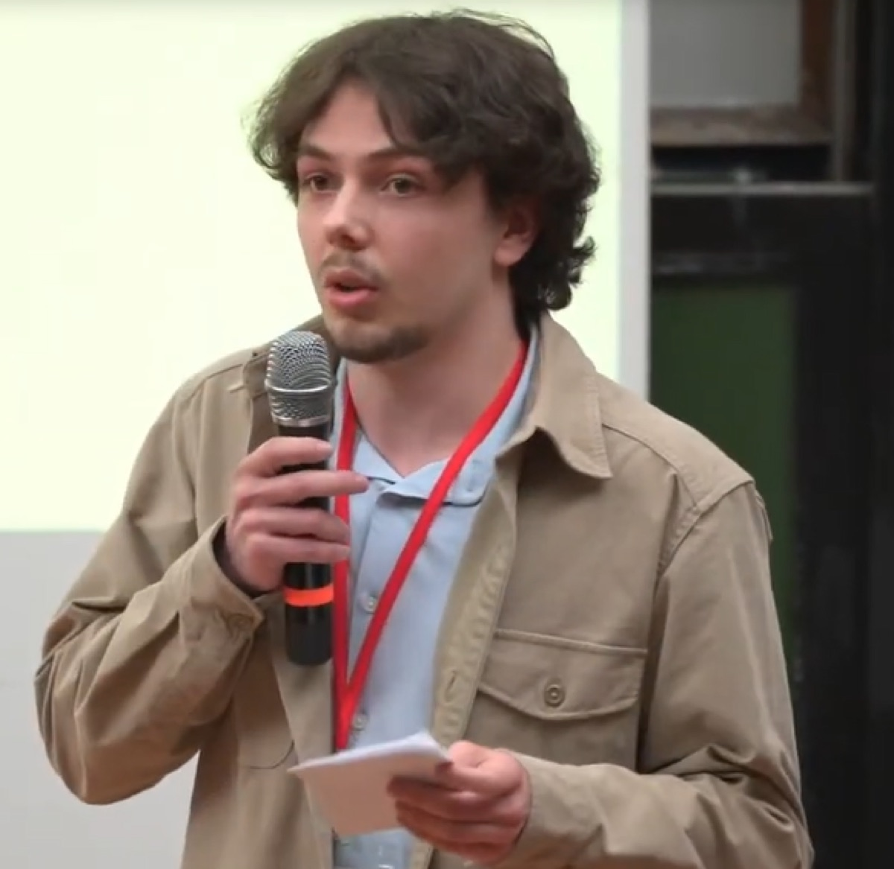
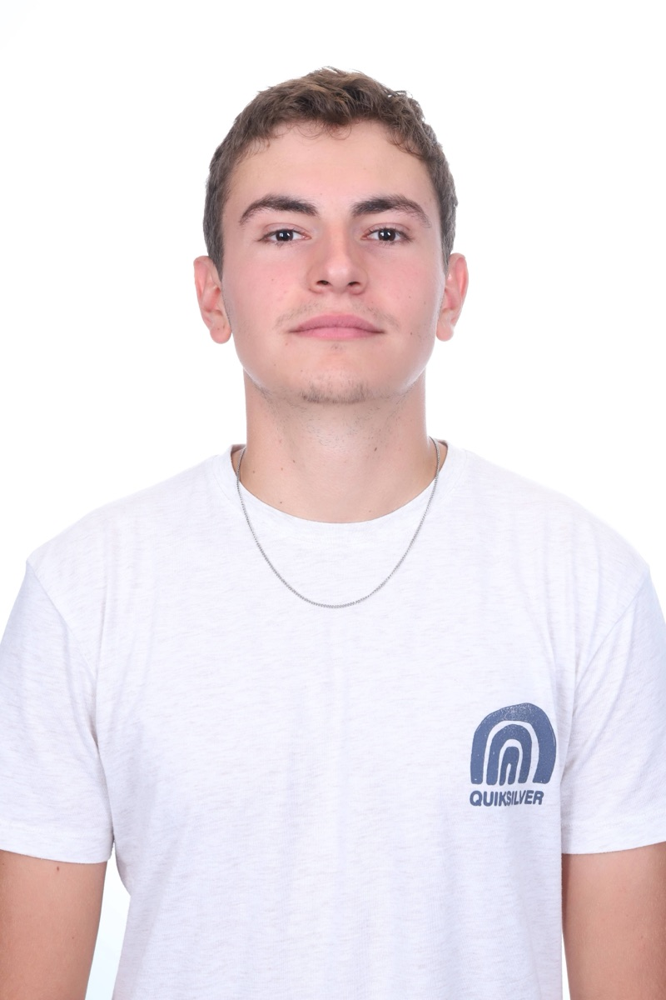

Stanislas Beguin
Chef de projet
Arbitrages, planning et budget de l'équipe.
2Morgan conçoit des instruments de mesure connectés pour les métiers de la facture instrumentale. KeyMate est son premier outil, né d'un projet d'école à l'EPITA.
Chef de projet
Arbitrages, planning et budget de l'équipe.
Assemblage
Mécanique du rail et des modules, câblage, soudure, impression 3D.
Embarqué et simulation
Le programme des modules et son banc de simulation.

Cloud et application
L'application de terrain, l'analyse du son et le tableau de bord.
Renfort
En appui sur les lots, là où l'équipe en a besoin.

Interface application ↔ modules
Garant du contrat entre l'application et les modules.
KeyMate ne remplace pas l'oreille du facteur. Il lui rend les mains libres.